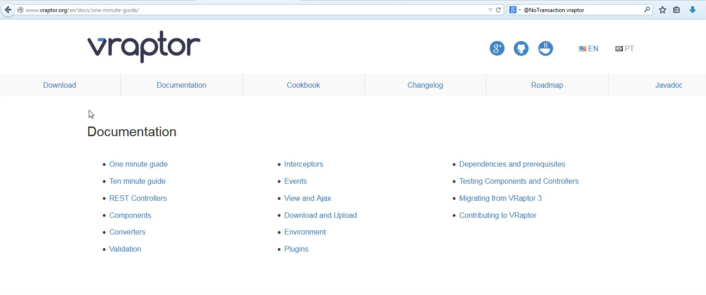

Rogério Fontes http://about.me/rogeriofontes / @rogeriofontes
Apaixonado por código e maneiras ágeis de criá-los. Viciado em leitura nerd geral, games, desenvolvimento, eletrônica, música e mulher (é claro).
Evangelista do programador poliglota de entregas rápidas e contínuas ao cliente. Sempre errando (sempre) e aprendendo nos caminhos de empreendedorismo de carreira e statup.
Skill: (java|c,c++|php|python|scala|js)$
Despois da inserção do JIT (Just-in-time compilation) na HotSpot, java melhorou significamente sua performasse. Java 8 melhorou significamente a verbosidade (tenho que admitir, pode melhorar muito)
# print "Hello, World!"
() -> System.out.println("Hello, world.");
Mais em: lambda-expressions-java-tutorial
Ha! python é melhor, PHP é melhor, Lisp é melhor!!!! Cada um tem seu melhor e seu pior, cada um tem seu propósito. Pra que brigar, seja diverso e use o melhor de cada, porra!
Assine nossa lista: UaiJug uaijug@googlegroups.com
Spring boot ajuda equipes de desenvolvimento de todos os lugares a construir uma aplicação simples, portátil, rápida e flexível baseada em JVM.
JBoss Forge é a maneira mais rápida de construir projetos Maven baseado em Java EE.
Alta velocidade de construção de Frameworks Web para Java e Scala.
O VRaptor 4 traz alta produtividade para um desenvolvimento Java Web rápido e fácil com CDI. É um framework MVC opensource com grande comunidade de desenvolvedores e usuários!
http://www.vraptor.org/en/docs/one-minute-guide/
http://www.vraptor.org/en/docs/ten-minute-guide/
Entre para uma comunidade..
... estude ...
... faça encontros para network ...
... entre em comunidades ...
... nunca fique na linguagem, entenda o ecosistema....
... divirta-se sempre!